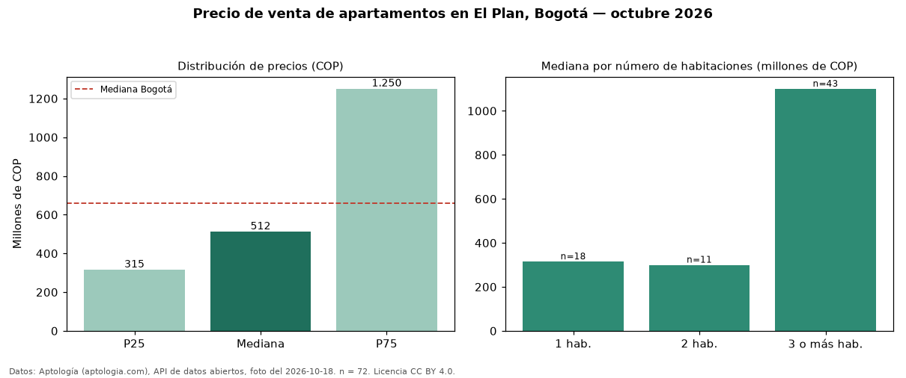

Precio de venta de apartamentos en El Plan, Bogotá — octubre 2026
Con 72 avisos vigentes, el precio mediano de apartamentos en venta en El Plan (localidad de Suba), Bogotá es COP 512 millones. Eso la ubica 22 % por debajo de la mediana de Bogotá para apartamentos (COP 660 millones). La dispersión es alta: el cuartil superior (COP 1,25 mil millones) es 4,0 veces el inferior (COP 315 millones). El segmento con más oferta es el de 3 o más habitaciones (43 avisos, mediana COP 1,10 mil millones); pasar de 1 habitación a 3 o más habitaciones sube la mediana 249 %. Por mediana, es el puesto 136 de 290 barrios de Bogotá con al menos 30 avisos de apartamentos en venta: en la franja media. El aviso más barato pide COP 231 millones y el más caro COP 1,85 mil millones. 60 % de los avisos incluye parqueadero, y su mediana (COP 1,10 mil millones) está 115 % por encima de la general. Datos: Aptología (aptologia.com), API de datos abiertos, licencia CC BY 4.0 — https://www.aptologia.com/venta/bogota/el-plan. Archivos: PDF de 2 páginas, CSV con las cifras y gráfica PNG.

| Avisos únicos | 72 |
|---|---|
| Percentil 25 | COP 314.950.000 |
| Mediana | COP 511.500.000 |
| Percentil 75 | COP 1.250.000.000 |
Fuente: avisos vigentes de portales inmobiliarios recopilados por Aptología, deduplicados (mínimo 30 avisos únicos por celda). Precios pedidos, no cerrados. Fecha: 2026-10-18.